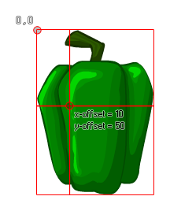

sprite_get_xoffset(index);
| Argument | Description |
|---|---|
| index | The index of the sprite to find the xoffset of. |
Returns : Real
When you define a sprite in the sprite editor, you need to set the origin for that sprite. This is the point at which the sprite will be "attached" or "drawn" when used with an instance. This function
returns the relative offset for for the x-axis of the origin based on the upper left corner being the 0,0 position, with a +x being right and a -x being left of this. The following image illustrates this:

if x - sprite_get_xoffset(sprite_index) < 0
{
x = sprite_get_xoffset(sprite_index);
}
The above code will ensure that an instance is maintained within the room based on the sprite (so the sprite is always visible).